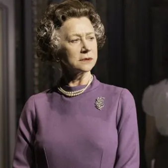

da dom 29 nov a dom 14 feb
Stage on screen : il meglio dei teatri inglesi in inglese
Per la quarta stagione consecutiva, il meglio delle produzioni inglesi di grandi opere teatrali di tutto il mondo illumina lo schermo del Visionario. Tutti gli spettacoli sono in inglese con sottotitoli inglesi e sono consigliati ai maggiori di 15 anni d’età. Biglietto intero…
 Indicazioni
Indicazioni
- Costi e prenotazioni
- Costo non indicato · Prenotazione non indicata
- Programma
- Programma da verificare. Apri la fonte ufficiale per orari e possibili aggiornamenti.
- In caso di maltempo
- Nessuna indicazione specifica pubblicata.
- Note
- Acquisito automaticamente dalla fonte.
L’EVENTO
Descrizione completa
Per la quarta stagione consecutiva, il meglio delle produzioni inglesi di grandi opere teatrali di tutto il mondo illumina lo schermo del Visionario. Tutti gli spettacoli sono in inglese con sottotitoli inglesi e sono consigliati ai maggiori di 15 anni d’età. Biglietto intero €10, ridotto €8. Stage on Screen: il meglio dai teatri inglesi in inglese
2026-2027
dal National Theatre Live al Visionario Domenica 29 novembre ore 10:30
The Audience (149’+15’ di intervallo)
Scritto da Peter Morgan, diretto da Stephen Daldry, con Helen Mirren, Richard McCabe
Dopo l’Oscar a Helen Mirren per la sua Elisabetta II nel film The Queen (2006), e prima della serie tv The Crown (2016-23) scritta da Morgan stesso, The Audience ha debuttato e trionfato a teatro nel 2013. L’opera esplora gli incontri privati settimanali (le “udienze”) che la Regina ha tenuto con i primi ministri durante i suoi 60 anni di regno. Domenica 20 dicembre ore 10:30
The Misanthrope (107’)
Scritto da Martin Crimp da Molière, diretto da Indhu Rubasingham, con Sandra Oh, Paul Chahidi
Sandra Oh ( Killing Eve, Grey’s Anatomy ) è la protagonista di questa graffiante versione del classico di Molière. Alice, una brillante romanziera, si fa portavoce di cause che altri temono di affrontare. Scoprirà presto quale prezzo debba pagare, come artista e come donna, per aver osato dire ciò che pensa. Una dark comedy senza tempo. Domenica 17 gennaio ore 10:30
Playboy of the Western World (158’+15’ di intervallo)
La vita di Pegeen Flaherty (Nicola Coughlan, Bridgerton, Derry Girls ) viene stravolta quando un giovane entra nel suo pub dichiarando di aver ucciso il proprio padre. Anziché essere emarginato, l’omicida diventa un eroe del villaggio. Celebre dramma irlandese in tre atti che debuttò nel 1907, questo potente adattamento lo rilegge come “opera al femminile” in anticipo sui tempi. Domenica 14 febbraio ore 10:30
Scritto da Christopher Hampton dal romanzo di de Laclos, diretto da Marianne Elliot, con Lesley Manville, Aidan Turner
Lesley Manville ( Il filo nascosto ) affianca Aidan Turner ( The Diplomat, Rivals ) in un nuovo, folgorante allestimento dell’adattamento di Hampton del celebre romanzo Le relazioni pericolose del 1782. La marchesa de Merteuil è una maestra nell’arte della sopravvivenza. Insieme all’affascinante visconte de Valmont, trasforma la seduzione in una strategia.
Biglietti acquistabili online e in biglietteria
IL PROGRAMMA
Programma e orari
Appuntamenti raccolti dalle fonti elencate. Dove manca un orario, non è ancora disponibile in questa scheda.
Programma pubblicato
- Dal 2026-11-29 al 2027-02-14
INFORMAZIONI UTILI
Prima di partire
- Controllare la fonte prima di partire.
ORGANIZZAZIONE